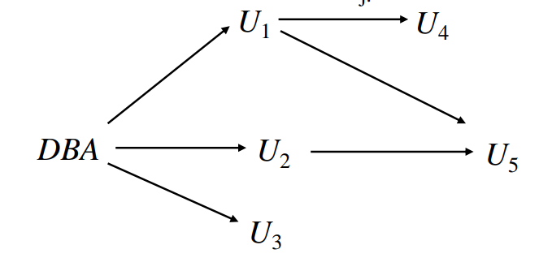

Intermediate SQL
Join Expressions
Join operations take tow relations and return a result as another relation. A join operation is a Cartesian product which requires that tuples in the two relations match. It also specifies the attributes that are present in the result of the join.
Natural Join Operations
select *
from course natural join prereq
are the same as:
select *
from course join prereq
on course.course_id = prereq.course_id
Beware of unrelated attributes with same name which get equated incorrectly. To avoid the danger of equating attributes erroneously, we can use the using construct that allows us to specify exactly which columns should be equated. For example:
select name, title
from (student natural join takes) join course
using (course_id)
Join Condition
The on condition allows a general predicate over the relations be joined. This predicate is written like a where clause predicate.
Outer Join
An extension of the join operation that avoids loss of the information. Computes the join and then adds tuples form one relation that does not match tuples in the other relation to the result of the join using the null values.
- Left outer join
- Right outer join
- Full outer join
Views
In some cases, it is not desirable for all users to see the entire logical model(the actual relations stored in the database). The view provides a mechanism to hide certain data from the view of certain users. Any relations that is not of the conceptual model but is made visible to a user as a virtual relation is called a view.
A view is defined using the create view statement:
create view V as <query expression>
where query expression is any legal SQL expression. The view name is represented by V.
View definition is not the same as creating a new relation by evaluating the query expression. Instead, a view definition causes the saving of an expression, the expression is substituted into queries using the view.
Update of a View
We can add a tuple to the view and the unspecified attribute will be filled with null.
But there are some updates that can not be translated uniquely. For example:
create view instructor_info as
select ID, name, building
from insructor, department
where instructor.dept_name = department.dept_name
The follow insert will fail because
- which department, if multiple departments in Taylor?
- what if no department is in Taylor?
insert into instructor_info values ('123', 'White', 'Taylor')
So most SQL implementations only allow updates on simple views.
Materialized Views
Materializing a view is to create a physical table containing all the tuples in the result of the query defining the view.
Need to maintain the view by updating the view whenever the underlying relations are updated.
Transactions
Unit of work.
The atomic transaction is either fully executed or rolled back as if it never occurred.
Integrity Constraints
Integrity constraints guard against accidental damage to the database, by ensuring that authorized changes to the database do not result in a loss of date consistency.
Integrity Constraints on a Single Relation
not nullprimary keyuniquecheck(P)where P is a predicate
Referential Integrity
Ensures that a value that appears in one relation for a given set of attributes also appears for a certain set of attributes in another relation.
Let A be a set of attributes. Let R and S be tow relations that contain attributes A and where A is the primary key of S. A is said to he a foreign key of R if for any values of A appearing in R these values also appear in S.
create table course (
dept_name varchar(20),
foreign key (dept_name) references department
on delete cascade
on update cascade
)
This is an example of cascading actions in referential integrity.
SQL Date Types and Schemes
Built-in Data Types in SQL
- date Dates, containing a year, month and date
- time Time of day, in hours, minutes and seconds
- timestamp date plus time of day
- interval period of time
Index Creating
create index studentID_index on stduent(ID)
Indices are data structures used to speed up access to records with specified values for index attributes.
User-Defined Types
create type construct in SQL creates user-defined type.
create type Dollars as numberic (12, 2) final
create domain construct in SQL creates user-defined domain types.
Types and domains are similar. Domains can have constraints, such as not null, specified on them.
Large Object Types
- blob binary large object
- clob character large object
When a query returns a large object, a pointer is returned rather than the large object itself.
Authorization
Granting of Privileges
The passage of authorization from one user to another may be represented by an authorization graph.

Requirement: All edges in an authorization graph must be part of some path originating with the database administrator.
Privileges
Forms of authorization on parts of the database:
- Read
- Insert
- Update
- Delete
Forms of authorization to modify the database schema:
- Index
- Resources
- Alteration
- Drop
The grant statement is used to confer authorization.
- Granting a privileges on a view does not imply granting any privileges on the underlying relations
- The grantor of the privilege must already hold the privilege on the specified item or be the database administrator.
The revoke statement is used to revoke authorization.
Roles
Privileges can be granted to roles. Roles can be granted to users as well as to other roles.
The roles is a set of privileges.
Trigger
A trigger is statement that is executed automatically by the system as a side effect of a modification to the database. To design a trigger mechanism, we must:
- Specify the condition under which the trigger is to be executed
- Specify the actions to be taken when the trigger executed
Triggering event can be insert, delete or update. Triggers can be activated before or after an event, which can server an extra constraints.
Instead of executing a separate action for each affected row, a single action can be executed for all rows affected by single transaction.
create trigger credits_earned after update of takes
on (grade)
referencing new row as nrow
referencing old row as orow
for each row
when nrow.grade <> ’F’ and nrow.grade is not null
and (orow.grade = ’F’ or orow.grade is null)
begin atomic
update student
set tot_cred= tot_cred +
(select credits
from course
where course.course_id= nrow.course_id)
where student.id = nrow.id;
end